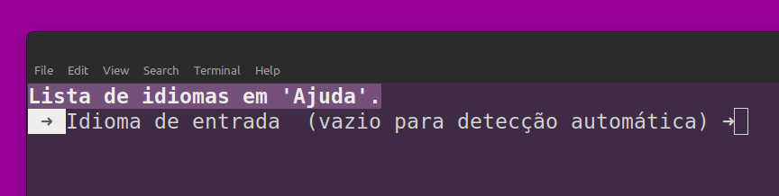
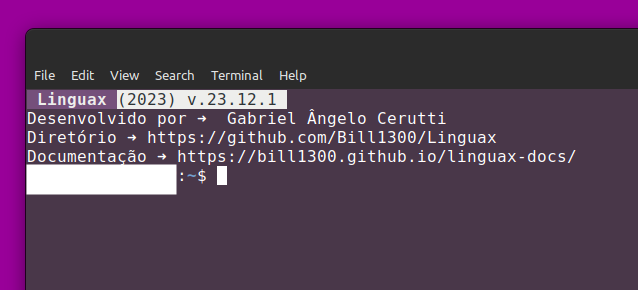

Instalação
Para instalar o programa execute o comando:
(É necessário a inserir a senha de super-usuário)
Execução
Modo Simples
Para utilizar o programa execute o comando linguax seguido da palavra ou frase a ser traduzida, como no exemplo abaixo:
linguax olá mundo
Copiar?
Saída ➜ Texto: "hello world".
Para que isso seja executado de modo eficiente e correto defina os idiomas de entrada/saída.
Modo Comum
Para a tradução de modo comum, utilize o comando:
linguax
Copiar?
Saída ➜ Menu de seleção.
Selecione Traduzir uma palavra ou frase (tecla 1 no menu), informar o idioma de entrada seguindo o código de cada idioma suportado pelo sistema ou deixar vazio para detecção automática, após isso informar o idioma de saída ou deixar vazio para selecionar o idioma salvo em perfil, e por fim descrever a palavra ou frase para ser traduzida.

Configurar Idiomas
Para a configuração de idiomas, no menu deve ser selecionado o item Configurar idiomas de entrada/saída (Tecla 2 no menu).
Idioma de entrada ➜
No início será questionado o idioma de entrada das palavras e frases que serão processadas, o idioma deve seguir a formatação correta mostrada na tabela abaixo, caso deixar esse valor vazio, o idioma de entrada será uma detecção automática do sistema.
Idioma de saída ➜
A segunda questão é sobre o idioma de saída das palavras e frases que serão processadas, o idioma deve seguir a formatação correta mostrada na tabela abaixo, caso deixar esse valor vazio, o idioma de saída será o idioma pré-definido nas traduções anteriores, se for a primeira, o idioma atual do sistema operacional.
Idioma de interface ➜
A terceira questão é sobre o idioma da interface do sistema, o idioma deve seguir a formatação correta mostrada na tabela abaixo, caso deixar esse valor vazio, o idioma de saída será o idioma atual do sistema operacional.
Lista de idiomas suportados:
| Idioma |
Código |
| afrikaans | af |
| albanian | sq |
| amharic | am |
| arabic | ar |
| armenian | hy |
| assamese | as |
| aymara | ay |
| azerbaijani | az |
| bambara | bm |
| basque | eu |
| belarusian | be |
| bengali | bn |
| bhojpuri | bho |
| bosnian | bs |
| bulgarian | bg |
| catalan | ca |
| cebuano | ceb |
| chichewa | ny |
| chinese (simplificado) | zh-CN |
| chinese (tradicional) | zh-TW |
| corsican | co |
| croatian | hr |
| czech | cs |
| danish | da |
| dhivehi | dv |
| dogri | doi |
| dutch | nl |
| english | en |
| esperanto | eo |
| estonian | et |
| ewe | ee |
| filipino | tl |
| finnish | fi |
| french | fr |
| frisian | fy |
| galician | gl |
| georgian | ka |
| german | de |
| greek | el |
| guarani | gn |
| gujarati | gu |
| haitian creole | ht |
| hausa | ha |
| hawaiian | haw |
| hebrew | iw |
| hindi | hi |
| hmong | hmn |
| hungarian | hu |
| icelandic | is |
| igbo | ig |
| ilocano | ilo |
| indonesian | id |
| irish | ga |
| italian | it |
| japanese | ja |
| javanese | jw |
| kannada | kn |
| kazakh | kk |
| khmer | km |
| kinyarwanda | rw |
| konkani | gom |
| korean | ko |
| krio | kri |
| kurdish (kurmanji) | ku |
| kurdish (sorani) | ckb |
| kyrgyz | ky |
| lao | lo |
| latin | la |
| latvian | lv |
| lingala | ln |
| lithuanian | lt |
| luganda | lg |
| luxembourgish | lb |
| macedonian | mk |
| maithili | mai |
| malagasy | mg |
| malay | ms |
| malayalam | ml |
| maltese | mt |
| maori | mi |
| marathi | mr |
| meiteilon (manipuri) | mni-Mtei |
| mizo | lus |
| mongolian | mn |
| myanmar | my |
| nepali | ne |
| norwegian | no |
| odia (oriya) | or |
| oromo | om |
| pashto | ps |
| persian | fa |
| polish | pl |
| portuguese | pt |
| punjabi | pa |
| quechua | qu |
| romanian | ro |
| russian | ru |
| samoan | sm |
| sanskrit | sa |
| scots gaelic | gd |
| sepedi | nso |
| serbian | sr |
| sesotho | st |
| shona | sn |
| sindhi | sd |
| sinhala | si |
| slovak | sk |
| slovenian | sl |
| somali | so |
| spanish | es |
| sundanese | su |
| swahili | sw |
| swedish | sv |
| tajik | tg |
| tamil | ta |
| tatar | tt |
| telugu | te |
| thai | th |
| tigrinya | ti |
| tsonga | ts |
| turkish | tr |
| turkmen | tk |
| twi | ak |
| ukrainian | uk |
| urdu | ur |
| uyghur | ug |
| uzbek | uz |
| vietnamese | vi |
| welsh | cy |
| xhosa | xh |
| yiddish | yi |
| yoruba | yo |
| zulu | zu |
Consultar histórico
No histórico (tecla 3 no menu) é apresentado uma tabela com todas as traduções feitas com a aplicação, tanto do Modo Simples como no Modo Comum mostrando: Data/Hora, Texto de entrada, Texto de saída, Idioma de saída. como no exemplo abaixo:
| Data/Hora |
Texto Entrada |
Texto Saída |
Idioma Saída |
| AAAA-MM-DD HH:MM:SS |
Olá Mundo |
Hello World |
en |
A aplicação cria documentos de texto no diretório ~/.linguax/ do tipo JSON e XLSX mostrando essas informações.
Desinstalar
Para remover a aplicação Linguax selecione a opção Desinstalar (tecla 3 no menu). Assim será questionado a confirmação para a remoção:
- 1 ➜ Sim, desinstalar (É necessário a inserir a senha de super-usuário).
- 2 ➜ Não, voltar ao menu.
Ao selecionar a remoção os seguintes itens serão removidos:
- Script de inicialização da aplicação:
/bin/linguax.
- Diretório
~/.linguax/* contendo o script de tradução, dados salvos de perfil e histórico de traduções.
Ajuda
Nessa seção é apresentado o Modo Simples e o Modo Comum para o usuário, a lista de idiomas com a formatação correta e um link para essa documentação.
Informações
Nas informações são apresentadas a versão da aplicação Linguax, além do diretório online GitHub.
